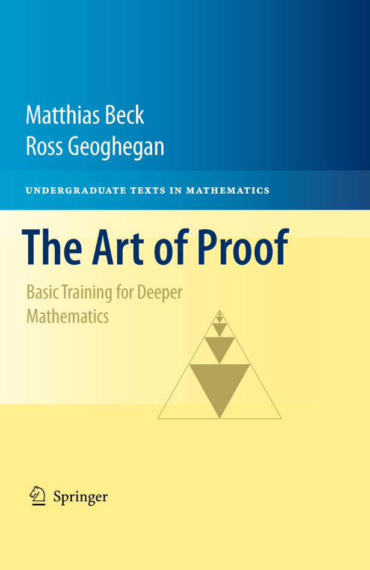

The Art of Proof
Basic Training For Deeper Mathematics
Matthias Beck and Ross Geoghegan
Course adoptions for The Art of Proof:
- Alfred University
- Binghamton University (SUNY)
- Brandeis University
- Cal State Fresno
- DePaul University
- Franklin & Marshall College
- Juniata College
- Lenoir Rhyne University
- Lock Haven University
- Louisiana State University
- Michigan State University
- San Francisco State University
- University of Alaska Fairbanks
- UMass Amherst
- University of Oklahoma
- University of San Francisco
- University of Washington
- Wellesley College
- West Point Academy
|
|

|
"Logic moves in one direction, the direction of clarity, coherence and structure. Ambiguity moves in the other direction, that of fluidity, openness, and release. Mathematics moves back and forth between these two poles. [...] It is the interaction between these different aspects that gives mathematics its power."
William Byers (How Mathematicians Think, Princeton University Press, 2007)
more pearls of wisdom